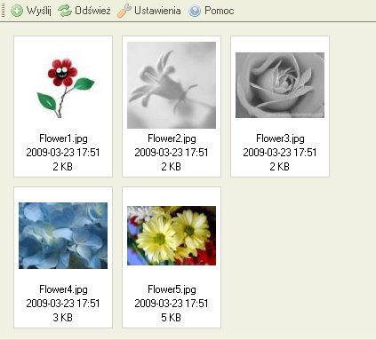
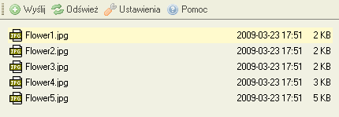
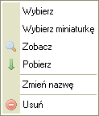

Okno z plikami wyЕ›wietla wszystkie dostД™pne pliki w wybranym katalogu.
Pliki mogą być wyświetlane na dwa sposoby, w zależności od ustawień CKFindera (zobacz "Ustawienia"). Poniżej przedstawiono porównanie wyświetlania w postaci "Miniaturek" oraz "Listy" w tym samym folderze:


Aby zaznaczyć plik w CKFinderze, kliknij w plik. Żeby łatwo odróżnić, kiedy mysz znajduje się nad plikiem, tło pliku zmieni się kiedy przesuniesz nad nim myszkę. Po zaznaczeniu pliku, kolor tła wybranego pliku będzie się odróżniał od pozostałych plików (najczęściej będzie to kolor niebieski).
Zaawansowane operacje można wykonać przy użyciu "menu kontekstowego". Następujące operacje są dostępne:

Wskazówka: niektóre opcje w menu kontekstowym mogą zostać zablokowane przez administratora systemu, wówczas będa one nieaktywne. Zobacz sekcję "Uprawnienia" w celu uzyskania dalszych informacji.
W celu wybrania pliku i zwrГіcenia go do nadrzД™dnej aplikacji, kliknij przycisk "Wybierz".
Ażeby podejrzeć plik, kliknij opcję "Zobacz" w menu kontekstowym. Chociaż nie wszystkie rodzaje plików można obejrzeć w przeglądarce, opcja ta może być przydatna w przypadku plików tekstowych, obrazków czy plików PDF. W pozostałych przypadkach przeglądarka poprosi Cię o wybranie odpowiedniej aplikacji do obejrzenia pliku.
W celu pobrania pliku, kliknij "Pobierz" w menu kontekstowym. PrzeglД…darka nastД™pnie spyta siД™ o miejsce zapisania pliku na Twoim komputerze.
Żeby zmienić nazwę pliku, wybierz opcję "Zmień nazwę" w menu kontekstowym. Pojawi się okno dialogowe zawierające nazwę obecnego pliku z pytaniem o nową nazwę. Wpisz nową nazwę i potwierdź.
Nie wszystkie znaki mogą być użyte w nazwach plików i katalogów z powodu ograniczeń systemów operacyjnych, na których CKFinder może zostać uruchomiony. Przykładowo, następujące znaki nie moga zostać użyte w nazwach plików/katalogów:\ / : * ? " < > |
Uwaga: zmieniając nazwę pliku, odnośniki do niego przestaną być "prawidłowe", a tym samym strony internetowe zawierające link do tego pliku nie będą wyświetlać poprawnej zawartości. Z tego powodu zalecamy ostrożność przy korzystaniu z tej możliwości.
Ażeby skasować plik, kliknij opcję "Usuń" w menu kontekstowym. CKFinder spyta Ciebie o potwierdzenie przed usunięciem pliku, ażeby się upewnić czy plik na pewno ma być skasowany.
Uwaga: kasując plik, odnośniki do niego przestaną być "prawidłowe", a tym samym strony internetowe zawierające link do tego pliku nie będą wyświetlać poprawnej zawartości. Z tego powodu zalecamy ostrożność przy korzystaniu z tej możliwości.